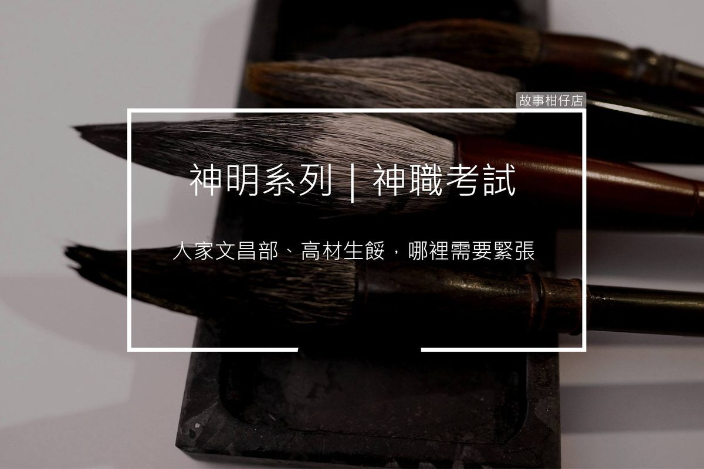

神職考試
2018-07-26

黑貓：聽說您這部門是神職考試中第一困難的，您怎麼認為呢？
文昌：（輕笑）這外頭信口胡謅的，沒這回事。
〈神職考試〉
殿前銅鐘陣陣響起，原本空蕩的神殿大廳，湧出滿滿考生，一時間人聲鼎沸。
「慘了啦......」媽祖部考生捧著厚厚一冊筆記，緊張兮兮的猛翻，口裡不斷哀嚎：「1999年的遶境路線，我竟然寫反，下一科完蛋了啦！」
「你嘛拜託，筆試還好吧，」神兵部考生啐了一口，喝道：「我們部門吼，剛考完南天門折返跑，等會三鐵測驗還要揹米袋，這才叫完蛋。」語畢，逕自捲起褲管、露出粗壯大腿，就地練起深蹲。
「安靜點可以嗎！我還要惡補紅線的一千種打法，你們一直吵，最後那一百種我怎麼也記不起來！」月老部考生哭喪著臉大吼，手裡一團紅線纏得像毛球，一本字典般的紅書躺在腳邊。
大廳佈滿緊張的氣息，唯有窩在角落的文昌部考生，伸伸懶腰，從布包裡拿出飯盒，搓了搓筷子，津津有味地吃了起來。
「欸欸欸，你看那，文昌部考試不是聽說超難嗎？他怎麼那麼淡定？」
「真好，不像我，都還要臨時抱佛腳....」
「咳，人家文昌部、高材生的餒，哪裡需要緊張呀！」
銅鐘再度大聲敲響，眾考生紛紛四散，匆匆趕赴考場。只剩文昌部考生慢條斯理地擦擦嘴，不急不徐地收拾著隨身物品。
望著其他考生們忙亂的身影，他取出包裡一隻黑亮的考試用筆，小心翼翼地別在胸口，這才露出滿意的微笑，神采奕奕地走向考場。
筆身鑲著「文昌筆」幾個金色細字，在他的胸前口袋裡，閃著耀眼的光澤。
您今天，許願了嗎？
故事柑仔店的神明集郵冊，
邀您一起許個願。
★ 更多的文昌